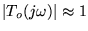
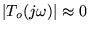
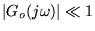
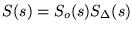
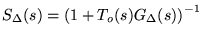
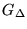

|
You are here : Control
System Design - Index | Book Contents |
Chapter 8
8. Fundamental Design Limitations in SISO Control
Preview
The results in the previous chapters have allowed us to determine
relationships between the variables in a control loop. We have also
defined some key transfer functions (sensitivity functions) which can be
used to quantify the control loop performance and have shown that, under
reasonable conditions, the closed loop poles can be arbitrarily
assigned. However, these procedures should all be classified as
synthesis rather than design. The related design question is: where
should I assign the closed loop poles? These are the kinds of
issues we now proceed to study. It turns out that the question of where
to assign closed loop poles is part of the much larger question
regarding the fundamental laws of trade-off in feedback design. These
fundamental laws, or limitations, govern what is achievable, and
conversely, what is not achievable in feedback control systems. Clearly,
this lies at the very heart of control engineering. We thus strongly
encourage students to gain some feel for these issues. The fundamental
laws are related, on the one hand, to the nature of the feedback loop
(e.g. whether integration is included or not) and on the other hand, to
structural features of the plant itself.
The limitations that we examine here include
- sensors
- actuators
- maximal movements
- minimal movements
- model deficiencies
- structural issues, including
- poles in the ORHP
- zeros in the ORHP
- zeros that are stable but close to the origin
- poles on the imaginary axis
- zeros on the imaginary axis
We also briefly address possible remedies to these limitations.
Summary
- This chapter addresses design issues for SISO feedback loops.
- It is shown that the following closed loop properties cannot be
addressed independently by a (linear time invariant) controller.
- speed of disturbance rejection
- sensitivity to measurement noise
- accumulated control error
- required control amplitude
- required control rate changes
- overshoot, if the system is open-loop unstable
- undershoot, if the system is non-minimum phase
- sensitivity to parametric modeling errors
- sensitivity to structural modeling errors
- Rather, tuning for one of these properties automatically impacts
on the others.
- For example, irrespectively of how a controller is synthesized and
tuned, if the effect of the measurement noise on the output
is To(s), then the impact of an output
disturbance is necessarily
<tex2htmlcommentmark>
1-To(s). Thus, any particular
frequency cannot be removed from both an output disturbance and the
measurement noise as one would require To(s)
to be close to 0 at that frequency, whereas the other would require To(s)
to be close to 1. One can therefore only reject one at the expense
of the other, or compromise.
- Thus, a faster rejection of disturbances, is generally associated
with
- higher sensitivity to measurement noise
- less control error
- larger amplitudes and slew rates in the control action
- higher sensitivity to structural modeling errors
- more undershoot, if the system is non-minimum phase
- less overshoot if the system is unstable.
- The trade-offs are made precise by the following fundamental laws
of trade-off:
-
So(s)=1-To(s)
that is, an output disturbance is rejected only at frequencies
where
;
-
Y(s)=-To(s)Dm(s)
that is, measurement noise, dm(t),
is rejected only at frequencies where

-
Suo(s)=To(s)[G(s)]-1
that is, large control signals arise at frequencies where
but
,
which occurs when the closed loop is forced to be much more
responsive than the open loop process.
-
Sio(s)=So(s)Go(s)
that is, open-loop poles of the process must necessarily either
appear as zeros in So(s)
(resulting in overshoot when rejecting output step disturbances
and additional sensitivity) or, if they are stable, the designer
can choose to accept them as poles in Sio(s)
instead (where they impact on input-disturbance rejection).
-

where
 that is, being responsive to reference
changes and against disturbances at frequencies with significant
modeling errors, jeopardizes stability; note that the relative (multiplicative)
modeling error 
usually accumulates phase and magnitude towards higher
frequencies.
- Forcing the closed loop faster than unstable zeros,
necessarily causes substantial undershoot.
- Observing the fundamental laws of trade-off ensures that
inadvertently specified, but unachievable, specifications can
quickly be identified without wasted tuning effort.
- They also suggest where additional effort is profitable or wasted:
- if a design does not fully utilize the actuators and
disturbance rejection is poor due to modeling errors (i.e., the
loop is constrained by fundamental trade-off law 6), then
additional modeling efforts are warranted
- if, on the other hand, loop performance is constrained by
non-minimum phase zeros and a constraint on undershoot (i.e.,
the loop is constrained by fundamental trade-off law 4), then
larger actuators or better models would be wasted.
- It is important to note that the design trade-offs
- are fundamental to linear time invariant control
- are independent of any particular control synthesis methods
used.
- However, different synthesis methods
- choose different closed loop properties as their constructed
property,
- therefore rendering different properties as consequential.
- Some design constraints, such as the inverse response due to NMP
zeros, exist not only for linear control systems, but also for any
other control approach and architecture.
- Remedies for the fundamental limits do exist but they inevitably
require radical changes, e.g.
- seeking alternative senses
- seeking alternative actuators
- modifying the basic architecture of the plant or controller
|